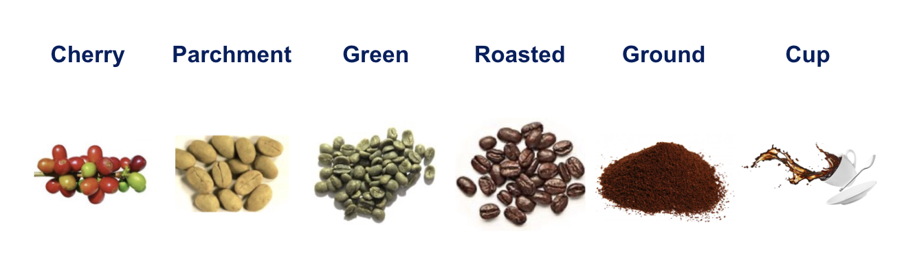
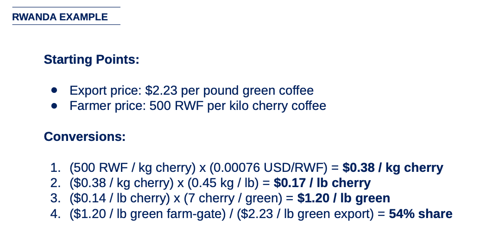
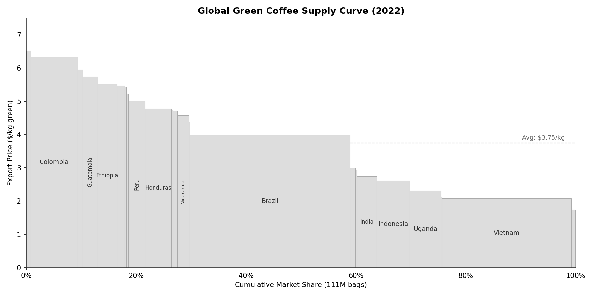
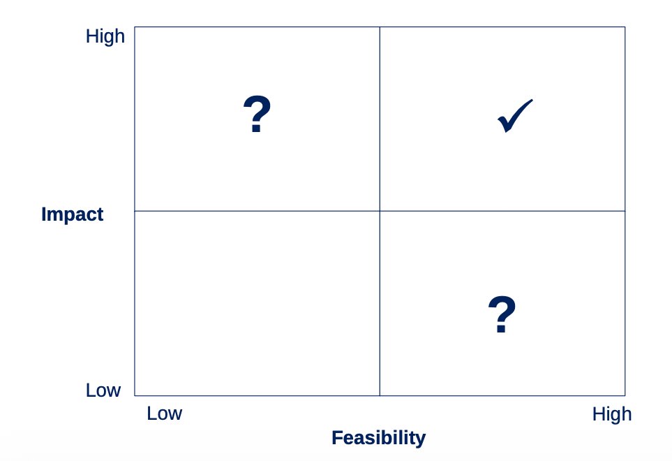

Course Materials¶

Introduction¶
My name is Carl Cervone. I have been teaching this guest lecture with Professor Glenn Denning at Columbia SIPA since 2017. This site is the written companion to the lecture. It covers how to trace the flow of value from farm to cup, diagnose where the problems are, and turn analysis into actionable recommendations.
You can browse all the past lecture slides (2017-2025). What follows is the current version, presented in March 2026 at Columbia SIPA.
About me¶
I came to coffee through development work. After studying environmental science in my undergrad, I moved to Tanzania in 2004 to work in microfinance. In 2006, I joined TechnoServe and spent a decade working on coffee value chains across East Africa and Latin America. In 2016, I cofounded Enveritas, which uses satellite data and machine learning to map and verify sustainability across coffee supply chains. In 2023, I cofounded Kariba Labs, which applies similar techniques to software (not agriculture) value chains. I am also a Columbia Business School alum.
The examples in this course draw from both my work in coffee, international business, and data science.
Why do value chain analysis?¶
Value chain analysis is a powerful tool for a variety of disciplines. It is obviously useful in international development, but it is also used in business, finance, technology, and many other fields. At the most fundamental level, it is a framework for thinking about how things are made, who does what, who gets paid what, and who controls the value. That is useful in any industry, from building rockets and semiconductors to growing coffee and bananas.
Today we will just be talking about coffee.
One of the most common questions I have gotten from students over the years is: "What share of the price the consumer pays actually goes back to the farmer?"
I have been tracking this at a high level every year as part of the lecture:
| Year | Farm-gate price ($/kg green) | NYC specialty cup | Farmer's share of retail |
|---|---|---|---|
| 2025 | ~$4.50 | ~$6.00 | ~1.5% |
| 2024 | ~$4.00 | ~$6.00 | ~1.3% |
| 2023 | ~$4.00 | ~$5.00 | ~1.6% |
| 2022 | ~$4.00 | ~$4.00 | ~2.0% |
The precise answer depends on the country, the buyer, and all the value chain steps in between. But, by and large, the farmer's share of the retail cup price has stayed between 1-2% for as long as I have been measuring it. The absolute prices move. The structural ratio barely budges.
Why? And what, if anything, can be done about it?
Today you will learn not just how to answer questions like this yourself, but a framework for doing much more. Let me walk through the math for this year's numbers.
This year's example: Ethiopian cherry to a Columbia campus cup. An Ethiopian farmer picks coffee cherry from her trees and sells it at the local market. That cherry is processed, exported, roasted, and brewed into a pour-over at a specialty cafe near Columbia's campus.
In the 2025/26 harvest season, farm-gate cherry prices averaged approximately 120 ETB/kg (Sucafina 2025/26 harvest report). After converting to dollars (÷ 127 ETB/USD, post-float rate) and to green equivalent (x 6 for the Ethiopian Arabica cherry-to-green ratio), the farmer receives $5.67 per kg of green coffee. The FOB export price is roughly $8.00/kg, so the farmer captures 71% of the export price.
That same kilogram produces about 50 cups. At a Joe Coffee or Blue Bottle near campus, a pour-over costs $5.75. Fifty cups = $287.50 at the register.
| Stage | Amount | % of Retail |
|---|---|---|
| Ethiopian farmer | $5.67 | 2.0% |
| Processing and export | $3.33 | 1.2% |
| Roasting and wholesale | $5.71 | 2.0% |
| Cafe (labor, rent, profit) | $272.79 | 94.9% |
| Customer pays | $287.50 | 100% |
The farmer captures 2% of the retail value but 71% of the export price. The gap is not primarily exploitation: the farmer receives a reasonable share of the export price. The 95% that goes to the cafe is mostly Manhattan rent and barista wages. But the structural ratio is real, and understanding it is the starting point for asking what can be changed.
These numbers rest on assumptions (cherry price, exchange rate, conversion ratio, cafe pricing) that shift every year. Regardless of which you adjust, the structural finding holds: the farmer captures 1-6% of the retail value. For the full step-by-step math and sensitivity analysis, see the detailed worked example.
Course objectives¶
- Convert between local farm-gate prices and international standards
- Map the actors in a value chain and trace how value flows between them
- Benchmark a country's performance against peers
- Diagnose where the real problems (and opportunities) are
- Recommend interventions that are both high-impact and feasible
The goal is not just to understand coffee. It is to learn a methodology you can apply to any agricultural commodity in any country.
Course overview¶
1. Coffee 101 -- The product, the processing chain, the market structure
2. The VCA Framework -- Five analytical skills, each producing a specific output:

Mapping value chain actors -- Identify who does what and how they relate to each other

Breaking down value flows -- Trace costs and revenues through the chain

Dealing with unit conversions -- Convert between local and international units

Benchmarking -- Compare performance across countries and time

Formulating recommendations -- Prioritize interventions using an impact-feasibility matrix
3. Case Studies -- Five countries, same analytical framework, different answers
4. Practical Tips -- Fieldwork advice and using AI for your own analysis